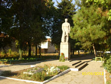

За Село Яворово

Днешното Яворово е сравнително младо селище, вероятно от XVIII век. Първото поселение е било в местността Мерите. Предполага се, че първите заселници са дошли откъм Стара планина. Предание гласи, че най-напред е назовано на името на местен овчар, загубил ръката си в сблъсък с турците – чолак, и оттам Чулхалар, Чухлаково, Чолаково. След проведен референдум на 8 юли 2012 г. се приема вотът на жителите и селото преминава към община Стара Загора.